my history with vocaloid
I got the idea of writing this blog post on August 31st, Hatsune Miku's birthday!!!! I'm very late but HAPPY BIRTHDAY MIKU!!!!
I've been meaning to write about my experience with vocaloid for a while now. Tell my journey and experience with these type of songs and which ones have stuck with me since then. 


introduction to vocaloid
middle school days
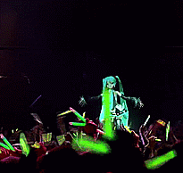
I've always known of its existence since I was in middle school. I remember the first one I ever heard was probably hit classic world is mine by Ryo. I stumbled upon the live version from one of Hatsune Miku's magical mirai concerts (EDIT: i've been told this is not from magical mirai, but from Kanshasai 39's Giving Day!) and I thought it was the coolest thing I have ever seen. I mean fuck, I watched this when I was 14 years old. OF COURSE, I'm gonna have my mind blown away by a dancing hologram. I thought this was so fucking crazy and insane at the time. to be honest, I'm still not sure how it works exactly but for now, I'm just gonna pretend that Miku is real. Anyway, this song was a certified hit for middle school me. I rarely listen to it nowadays, but if I do, I always prefer the live version rather than the original.
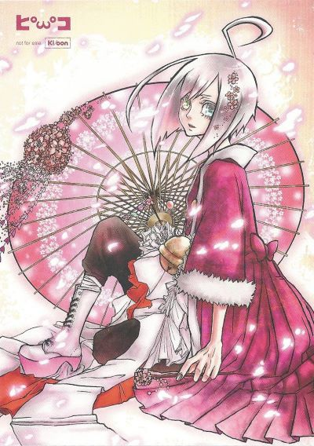 Another core memory of mine is me listening to this remix of Skrillex' scary monsters and nice sprites (LOL) i had found on tumblr with a vocaloid called Utatane Piko. Never heard of this guy tbh, but he looks pretty cool. Anyway back to the skrillex vocaloid remix, I listened to this song so much throughout middle school that I find it a bit embarrassing.
But despite this, I never really bothered to look for more vocaloid songs during this period. I think it is mostly because I wasn't as crazy over music during middle school as I am to this day. back in the day, I would just listen to whatever came my way and never went out of my way to search for new things.
2022 re-discovery
Fast forward to February of 2022. Where I have become, indeed, crazy about music. I would spend most of my time listening to new music so I think this heavily helped my interest in vocaloid.
I hate to admit it but during this time I had tik tok downloaded on my phone (do not fear it has been uninstalled from my phone for quite a while) and, to my luck, a lot of vocaloid songs would pop up here and there while scrolling through the app. and my god were they bangers!!! some song snippets that captivated me and kickstarted my interest in vocaloid were young girl a by siinamota, egoist by parsley onuma, lost umbrella by inabakumori, and aishite by kikuo.
From these songs, I listened to a little bit of what each producer had in their discography.
siinamota, and parsley onuma
Out of all of them, siinamota's and parsley onuma's music catched my attention the most.
- Siinamota would take me paragraphs to even begin explaining why I like his music and why it means so much to me. I'll probably leave that for a future shrine that I am planning to have on my website about him! though you can get a glimpse of that as I get into the song highlights that are produced by him
- On the other hand, parsley onuma's music is very influenced by electronic genres such as EDM, drum and bass, breakbeat, future bass, and others. if you couldn't tell from the questionable choice of having a skrillex vocaloid song on repeat, I grew up listening to electronic music and it is my favorite music genre. Onuma's music is just very catchy and fun to dance to for me!!!
There was an 80% chance I was listening to a song by either of those two producers that month. I swear I was OBSESSED... and they are still amongst my favorite producers to this day!
song highlights
I can definitely pinpoint the vocaloid songs that I listened to during 2022 that made me love the genre and realize there was a whole other world out there of music to explore! In here I will give out my reasons (or try my best to) as to why i love these songs so much why they left such an impact on me.
notes: they're in order of when I first listened to them, more or less because my memory ain't that great. Images contain links to the song's PV / MV / audio! Either redirecting you to nicovideo or youtube so you can listen to the song as you read about it!
young girl a by siinamota
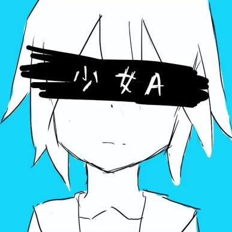 The Very first one that kickstarted it all. like I said earlier, back when I still had t*k tok on my phone I randomly stumbled upon this song and it kinda left me flabbergasted at how good it was.
I decided to look more into the artist's discography one day and well... that's how I am here writing this! you will notice a good portion of the songs here are by siinamota. and for that, I wanna say sorry.... but you have to understand that this producer's music just absolutely took over my world when I listened to his discography.
Back to young girl, you can tell this is a pretty sad song from the instrumental alone. it almost feels like a cry for help. especially in the last chorus.
That was all the information I could gather from the instrumental alone, but the first time I read the translation for the lyrics I remember I've never felt so... devasted. and I don't mean this in a negative way towards the song. but the lyrics just hit VERY close home. way too close. it was a bit scary.
"collecting the dreams i threw away
because of a little mistake that i made"
(translation from official youtube PV)
Despite all of this, I still love listening to it. I'm glad I found Siinamota's music because of this song.
Fun fact: this song is featured in siinamota's album ikiru where it has been remastered but I actually prefer the original version (which is the one I linked) rather than the remaster. I like how "rough" the original sounds and I think it adds a tiny bit to the atmosphere of the song. and the outro of the original feels very dramatic in comparison to the remaster. but one thing I will give to the remaster is that I like how the guitar instrumental sounds way better in that version.
stoy. by siinamota
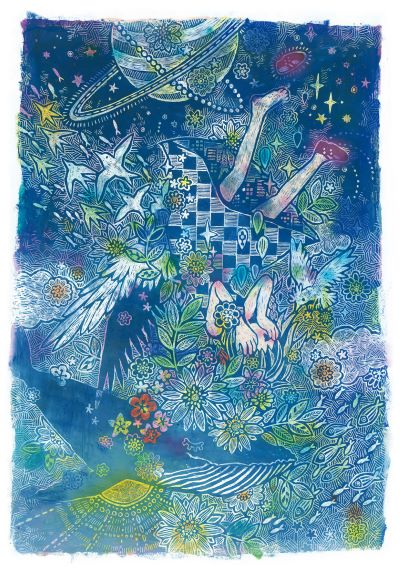
This one is pretty interesting because as I was doing my siinamota research (listening to all of his discography) I noticed that I already had this song saved on spotify and I was like "Huh?!?! How did you get here...." I think spotify must have recommended it to me which caused me to save it 4 months before that moment. and I find that pretty cool. I'm very happy I got to discover Siinamota's music. One way or another this was bound to happen :)
stoy. is one of the best songs in sepia record for me. I love the fictional language that siinamota created for it. the intro is so good too. You can hear someone inhaling and exhaling twice in the intro which I always follow along every time it plays. it is like my own little breathing exercise. after this, there's a pause with TV noise static and as soon as that's done the song kicks off. love love love.
Even though I like so much about you, I don't know anything about you.It is so sweet and sad too (I have a feeling I will say this about a lot of songs here). I also really like the fuzzy instrumental. especially the guitars at the end of the choruses. it is just SO good! the atmosphere this song gives off is just fantastic. also, I find the NASA recordings sampled in this very cute too.
(nicovideo description)
The art from the PV (shown above) is so gorgeous too!!!! made with oil pastels by Tokucina / 彩音ちな. they also have a site if you'd like to see more of their work or just visit it! I'm a huge fan of their art.
そらのサカナ / sky fish by siinamota
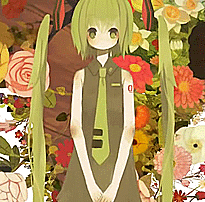
From the first listen, this has been such a beautiful song to me. I still remember the first time I heard that "sayonaraaa~" and it's something I will never forget. This, alongside stoy., was so important to me while I was re-discovering vocaloid. It really showed me the beautiful creations that people can do with them.
Also want to mention the remaster of this song! It is pretty much the same except for some added instrumentation. Really like the additions.
This song kind of took over me for a bit and I ended up doing a redraw with watercolors of the gif shown above! It is one of my favorite pieces that I've made to this day 
PV art is by meisa! Another artist I really admire. I love how soft their coloring is
charles by balloon
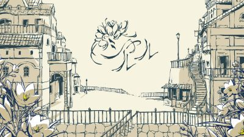
This one was recommended to me by one of my friends, v! and it was an instant hit. i love playing this one on project sekai, A LOT!
i will pretty soon (hopefully) listen to the album that this song is from! This producer's music sounds really cool so I can't wait to check that out! it will eventually appear in one of my listening logs.
PV art by アボガド6 / avogado6
dogdog by abu-se-ken
randomly recommended from spotify one day!!! and I absolutely fell in love with it. It has a very chaotic feel to it which makes it very fun to listen to despite the dark topics that the lyrics touch upon.
If I'm being honest, I've never heard Miku tuned like this. She sounds very, raspy. BUT believe it or not, what I love the most about this one is it's instrumental.
I mentioned earlier the chaoticness that this song has. I think that is mostly due to how abu-se-ken uses the piano (or keyboard idk lol). and my god do I LOVEEE the piano that is in this song. it's so good. it sounds so desperate and frantic at times and yet when given its place, it can be on the more melancholic side. the real cherry on the top for me is when there are multiple piano recordings layered on top of one another, an example of this can be heard in the last chorus. that's where the song really shines.
I went on about the piano for a bit but overall, I just adore this instrumental a lot. I've heard other songs from abu-se-ken and they have a certain style to them that I really like. I'd say it is like, unfiltered. just raw and chaotic. I've been paying attention to the music he has put out since then.
ずっと夢の中 / corruption by parsley onuma
 I like dancing to this one a lot. and I feel kinda bad doing so because of the lyrics, but this song is seriously super catchy.
I like dancing to this one a lot. and I feel kinda bad doing so because of the lyrics, but this song is seriously super catchy.
雨と雫 -斜陽の丘にて- by ichinose LUPO
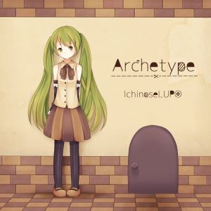 I don't know anything about this producer, but my discover weekly one time blessed me with this song and it has been one of my favorites since then. this might be the only ballad / slower tempo song in this list since I usually listen to more energetic vocaloid songs, but this one just has a special place in my playlist. very kind and sweet. I should look up a translation for this one day.
lost & found by siinamota
 I was on my siinamota discography binge-listening (genuinely don't know if there's a better way of describing that) and I got to his 4th album: yume no manimani. this album is so phenomenal. every song in here just fills me with so many different emotions, and I really love each one of them. I really recommend this album if you're new to siinamota's music.
I was on my siinamota discography binge-listening (genuinely don't know if there's a better way of describing that) and I got to his 4th album: yume no manimani. this album is so phenomenal. every song in here just fills me with so many different emotions, and I really love each one of them. I really recommend this album if you're new to siinamota's music.
Now, something I admire about this album a lot is its use of drum and bass. It is pretty limited throughout the release, but you can hear it in songs such as its title track, and in lost & found
I remember very vividly where I was and what I was doing when I listened to this song for the very first time. what an experience. I cannot even begin to describe how beautiful this song is to me.
It features some vocals by vocaloid Rin Kagamine (DAUGHTER) but the song is mostly an instrumental / interlude. when I heard the first half I didn't think much of it but the really good stuff is in its 2nd half. First of all, I love how Rin sounds kinda muffled as she's singing the verse. Until she gets to the climax of the song, followed by siinamota's signature producer tag
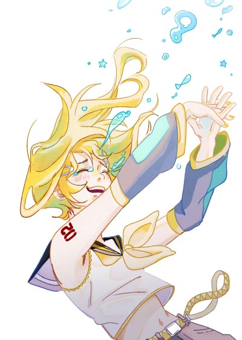
I've always thought the climax of this song sounded like an explosion of happiness. like if something liberating, freeing, just happened. something that would make you jump from joy with tears of happiness running down your face. that is the reason why i wanted to feature piracucu's fanart in this log. I asked for permission to use this piece of art in my blog post since it captures very well the feelings that this song brings out.
The drum and bass in this part is just so incredible. That fast-paced drum loop accompanied by the GORGEOUS double bass in the background is something that is so personal and beautiful sonically to me. and lastly, the outro gives us that same double bass but accompanied with these sounds that I can only describe as heavenly synths??? it seriously sounds like angels harmonizing to me.
After all that excitement and energy we get a little breather in the outro as we drift off further and further away from Rin's voice. so lovely. I love this song so much. Lowkey part of my introduction to drum and bass as well. one of my many beloved music genres.
fanart on the side by piracucu, used with permission! i really recommend you give their fanmade MV for this very song a watch as well! you can also find them on tumblr and instagram
炉心融解 / meltdown by iroha(sasaki)
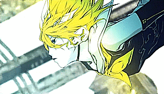 And talking about drum and bass, here is another vocaloid banger with a dnb edge to it! lost & found, and this song made me realize that this subgenre of electronic music is something that I really enjoy. And I find that very sweet. very important song just for that. It was also the first song I 100%'d in project sekai :D in hard mode because I play with my two thumbs
春嵐 / shun-ran by john / tooboe
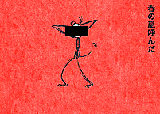 AND YET ANOTHER ONE of those songs where I was jamming and dancing to it for weeks without knowing about the depressing lyrics..... so sorry.
villain by teniwoha
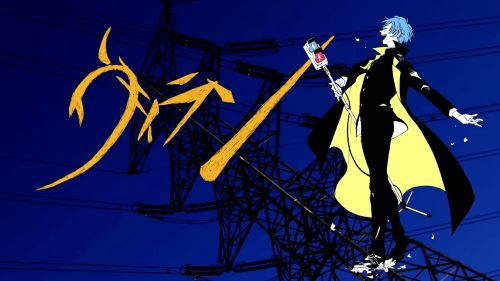 THIS ONE... so happy trans ppl have this song. It is so so so catchy. It makes me feel like I have a top hat and a little cane or whatever and I'm doing a little dance with it moving to the beat like..... oh Yes
"I wear different clothes and pretend to be a boy in front of you"art by ねここ / nekoko_35
(translation from official mv)
Iゆえに by parsley onuma
I remember when this came out last year on June 1st, a day before my birthday!!!! Got a notification for it since at the time I had already been through parsley onuma's discography and loved it so I followed em on spotify. and honestly? I LOVE thinking that this was my birthday gift from parsley onuma. everyone say thank you parsley onuma. it was one of those love at first listen songs. it has everything that I love and it's so energetic!
The pots and pans bridge, as I like to call it (lovingly), makes me giggle every time I get to it if I'm being honest. But I still REALLY like it nonetheless.
Fun fact: If you haven't noticed yet, my about page is very much inspired by this MV 
マトリョシカ / matryoshka by hachi / kenshi yonezu
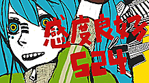
 I don't really remember how this song found its way to me... but DAMN!!!!!! is it so fucking good and loud and catchy. this is one of my top favorite vocaloid songs to this day!
I don't really remember how this song found its way to me... but DAMN!!!!!! is it so fucking good and loud and catchy. this is one of my top favorite vocaloid songs to this day!
I really love how it keeps building up til the very end like WOW i feel like i cannot BREATHE while the outro of this song is playing. it has so much energy!!!!!! I love dancing to it. if I heard this in 2010 I am pretty sure it would have fundamentally changed me.
Shortly after listening to this song, I listened to the album it came from: official orange, it has the name manic energy that the song has so I enjoyed it quite a lot and recommend it as well.
on a somewhat related note: i had a CRAZYYYY realization with this song. i discovered this song around the time that chainsaw man was airing. the thing is that chainsaw man has a BANGER of an opening song called kickback which at the time I Did Not Know they were made by THE SAME PERSON until I accidentally saw this
on my youtube history. I had a real "holy moly" moment.
ましろの色 / mashiro no iro by siinamota
 another siinamota favorite! :] You know, it has always amazed me how siinamota can make drum and bass sound so sad. The fast breakbeats used in this song in contrast with Miku's sweet and yet melancholic voice are just so genius and amazing to me. so lovely.
another siinamota favorite! :] You know, it has always amazed me how siinamota can make drum and bass sound so sad. The fast breakbeats used in this song in contrast with Miku's sweet and yet melancholic voice are just so genius and amazing to me. so lovely.
Another example of this is sulli's dorothy, one of my favorite kpop songs that uses a DnB beat in a rather gloomy song.
halo by siinamota
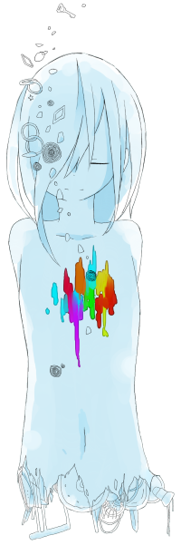
Where to even begin with this song. I have this one very close to my heart because of the impression that it left me with. it is one of the most haunting and depressing songs I've ever heard in my life to this day. nothing compares really.
As i was listening through siinamota's alterour setsuna pop album, I eventually got to track 7: halo
The first time I listened to this, I just stared blankly at the screen. When Miku started singing, I had an urge to sob. I'm pretty sure I let a tear out. but I just felt so horrible listening to this. my chest, my entire body felt so heavy. it made me feel things that I've never felt with a song. one of the most surreal experiences of my life. But this very reason is also why i love this song so much and even say it is one of my favorites of his despite the heartache that it gives me every time I listen to it. It feels dense. Uncomfortable.
What I love the most is that just pure sounds and noises made me feel like someone wanted to rip out my heart. it just fascinates me so much!!!!!
Fun fact number 1: The song I just talked about is a sort of rearrangement! The original song was made for an irregular time signature vocaloid compilation, which I find to be a super neat concept for an album. I need to finish listening to it someday.
Siinamota made a PV for the original version of halo which I highly recommend to watch and experience if you haven't already. it's where the image on the side is from! it has such a fantastic atmosphere which serves greatly to the song. the original ver of halo is less chaotic than its remake, and it is maybe a bit creepier because of how much space or sparse sounds it has. I would even say it feels very isolated.
Fun fact number 2: i have made a redraw of the img shown above!
img is from siinamota's pixiv, shown in halo's PV
ずっと夢の中 / always in a dream by kinoue64
 And nearing the end of my 2022 re-discovering vocaloid era, we have one of my favorite producers: kinoue64! I remember discovering this artist through a spotify link one of my friends on twitter shared. and MAN. this? this was love at first listen.
And nearing the end of my 2022 re-discovering vocaloid era, we have one of my favorite producers: kinoue64! I remember discovering this artist through a spotify link one of my friends on twitter shared. and MAN. this? this was love at first listen.
The album this song is from was one of my first experiences with vocaloid being used for shoegaze songs. it was such a joy to listen to as someone who loves the genre. I'm honestly very amazed at how well Miku's voice fits these type of muffled / noisy songs where the vocals aren't the primary focus. But man, does her voice stand out so well in all of that fuzzyness. The way kinoue64 tunes her is just so sweet and it even kind of evokes a sense of nostalgia??? I don't know why... but it just does for me.
i highly recommend kinoue64's music for those who enjoy shoegaze and dreampop. Besides my love for their use of miku, their songs' instrumentals just never cease to amaze me. Genuinely an incredible artist to me!
nowadays
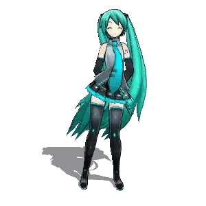 Since then, I've always been looking for new vocaloid albums to discover and listen to. there's so much neat stuff out there!!! I am just very happy I was able to get back into these type of songs because there are just so many interesting things producers do with vocaloid and I find it all very fascinating
I am still pretty new to all of this so if you have any vocaloid albums or songs you'd like to recommend to me, don't be afraid to shoot me an e-mail @ doqmeat@gmail.com!
background image is official art of Miku's 16th b-day!
written with love by des, 12.sep.23